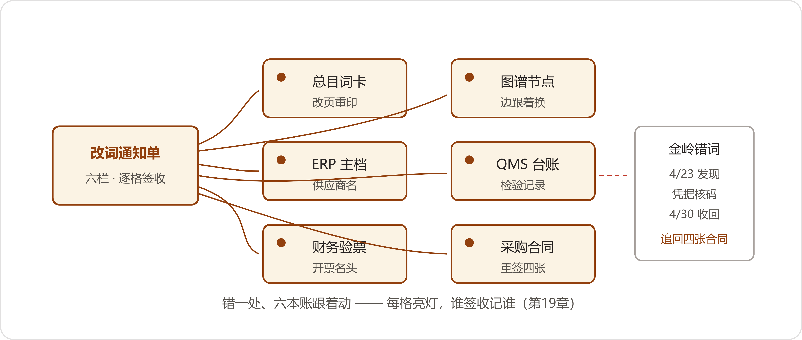

The Grey Zone
2027年4月21日，星期三。四月里啃的那一柜，上个礼拜收了尾：九百多个编码，六十七组，一组一组过的；追溯的链，也合了龙。行政楼前的杨树落絮，风一起，白絮贴着地皮打滚，往人裤脚上粘，门房扫过去一层，又落下来一层。数字办难得清净，赵峰把图谱快照存进受控目录，小夏跑她的回归，屏幕上一排绿点，三百多个晚上，都是这么绿的。
离五月十号，还有十九天。
潘永年上来了，手里一个透明文件袋。他把袋子放在会议桌上，手指在袋面上按了按，才开口。
"金岭的函。锻件那家，供了我们十一年。函上写，更名——金岭锻件有限公司，打下个月起，叫金岭精锻有限公司。附了新执照的扫描件。"他把袋里两页纸抽出来，推到桌子中间，"订单还得出，发票还得收，款还得付。词是总目的，我上来问一句：这个名，谁改，怎么改，改了以后哪些账跟着动？"
陈临把函拿起来看。抬头是老户的全称，正文两行，落款盖着新章，红的，印泥还新鲜。函末尾另起一行小字：账户同步变更。
"那……等腊月添词会？"小夏问。
"添词会腊月开。"赵峰头也没抬，"人家改名，不挑腊月。"
章程里有这条：急词走通道，六口过半到场即开，纪要补全体。陈临把函递给郑敏传看，当场定了日子。"礼拜五。老潘，凭据备齐——函、执照。向东呢？"
"向东让我押回家歇着了。"潘永年说，"四月光章他就盯了小两百个，眼药水一天点四回。再不歇，眼睛先罢工。"
急通道开会，到的是四口：郑敏、潘永年、方致远、许曼。齐连升排产腾不出身，周建海在大区。赵峰摊开记录本，小夏把凭据的扫描件投上屏幕。窗开着一条缝，杨絮往里飘，落一张，她拂一张。
会开得短。函念了一遍，新执照过了一遍。许曼用笔尖点着函末那行小字。
"账户变更，这条我不认纸。开户证明、银行回单，让金岭补齐了再动。付款在这之前，一分不走。"
"老户，十一年，复评年年过。"潘永年说，"函是挂号寄的，业务员微信上又追了一遍，说是少东家接手，执照都换好了。"
方致远问："老执照带了吗？"
"在ERP主档里存着扫描件。"潘永年翻了翻手机，"要调吗？"
那天谁也没调。投影上立着新执照，十八位代码清清楚楚；老执照躺在主档深处，隔着几层目录。会开了四十分钟，落字：正词改"金岭精锻"，"金岭锻件"挂代；ERP主档名称下周改；新出的合同用新名。潘永年在记录本上签了字，四口过半，纪要补全体。
散会前，赵峰当场起了一张新单子。A4纸横过来，画了六栏：总目词卡、图谱节点、ERP主档、QMS检验台账、财务验票、采购合同。栏头一行字：改词通知单。
"搁去年，映射本上改一行，我自己一晚上完事。"他把单子复印六份，一份一份发下去，"如今这页纸，六口签收，两天起步。"
"两天，换六口都知道、都点头。"郑敏在回执栏签了名，"这个慢，我认。"
晚上小夏在本子上记了一条。设岗之辩前她做功课，翻到那位号主转述一场碰头会的帖子，有句话她抄了下来："别把一个团队的能力清单，硬塞进一个人的 JD。"她原先没全懂，这天算懂了——活拆回六口，每口喂的卡自己认，这套部署齐了，才立得住一个岗。
小夏领了追回执的活，抱着那沓纸出门，走到门口又回头说了一句："这回词没错——是外头的世界自己动了。"
礼拜二，鲁向东假满回岗。桌上压着一摞单子，头两张就是金岭的发票，ERP把票退了回来，退票理由原文一行：票面税号与主档不符。经办拿着发票来问，他先没言语，从柜子里把那本翻毛了边的章样簿抱出来，翻到金岭那一页。二〇一六年的合同专用章，圆的，"金岭锻件有限公司"八个字；那封更名函的落款章是方的，"金岭精锻有限公司"。章形不对，字号也不对。他又调出新执照的代码，跟主档里存的老代码并排一搁——十八位对十八位，没有一位对得上。
他把老花镜摘下来揉了揉眼，起身去找潘永年。
"名字像，码不像。"他说，"这不是改名，这是换户。"
潘永年把电话打到金岭，接电话的还是那个业务员，这回话直了：公司是少东家新注册的，老户年内注销，业务往新公司走；函是底下人拟的，图省事，写成了更名——落款那枚方章，是人家一枚方形的业务章，正经的圆公章还在备案、没下来，底下人拿它先盖了函。潘永年捏着话筒听完，没骂人，把电话搁了，上楼来了。
当天的对词会临时加了一项：改词通知单急停，六口的回执一律作废。散会后陈临把电话打到行政楼三楼，把事情从头到尾报备了一遍。那头听完，只有三个字："礼拜五我来。"
礼拜五，委员会六口到齐，贺延龄坐在长桌尽头，手边一杯茶，没动过。鲁向东头一回以凭据人的身份坐在桌边，章样簿摊开，两枚章的印样并排摆着，投影上是那两串对不上的代码。他讲完，把章样簿合上，拿袖口把封面擦了一遍，才推到桌子中间。纸在屋里传了一圈，谁接了谁低头，投影仪风扇的声音都听出来了。
传到郑敏手上，她看完了，把纸放回桌子中间，手指头压着。
"我算了一笔。在保机器的链上，锻件全是老户的。审核抽的是往年出厂的机器，抽着哪台，哪台的齿轮坯子都得落回'金岭锻件'头上。"她说得慢，"咱们差点儿把往年出厂的机器，改到一家还没供过一炉货的户名底下。"
"错，错在哪一步？"贺延龄问。
没人抢着答。过了一阵，潘永年把身子坐直了。
"凭据少一样。函、新执照都有，老执照没人想起来调，代码没人比。向东要在，一眼的事——他歇着，是我押走的。"他停了停，把那两页纸拉回自己跟前，"那天到会四口，字是我签的。我点的头，我去善后。"
善后是他自己列的，本子上记了五条：改页撤回，词卡、图谱、ERP主档名称，一样一样改回去，改回去比改出来还慢半天；已发的四张新合同追回重签；检验台账更正三页；老户的往来款月内对清；新户走供应商准入，考察、送样、复评，一样不省。
"新户的词，等它头一批货进厂再立。"末了他添一句，"货没进厂，词不立。"
赵峰把这一条记完，在记录本上另起了一行，写得很慢。写完他把本子转过去，给全桌看。
"再补我一句。"许曼说，"税务认税号，工商认代码。名字——名字谁家都能起。"
周建海是头天从大区赶回来的，一直没吭声，这会儿把本子往前一推。
"那我也趁这会儿提一个。销售域那个'意向客户'，三月里挂的账。审核员还有十天就进门，他要翻客户口径，咱们册子上这一笔是空的。我走急通道，把它提前立了，行不行？"
"问题单上没有它的题。"郑敏说。
"单子是死的，日子是活的。"
"急不急，不看日子。"贺延龄开了口。他把茶杯端起来，又放下，没喝。"看有没有人卡在半道上，等这个词使。审核员等着要吗？他还没进门呢。真等着要，他自会开口，开了口再走通道，不算误事。急着往前赶的，都不是这个词急，是咱们自己急。"
他看了一圈，没人接话，就把这一条裁了：不算急，挂腊月。周建海把本子收回去，脸上过不去，嘴上没再争。他把本子在掌心里扣了一下，折了个印，才塞进兜里。
"他要真问到，"陈临跟他说，"就照实答：挂了账，销售域的册往后立。这一句，你这几天跟我对三遍。"
"背课文啊。"周建海嘟囔了一句，到底应了。
散会的时候，陈临送贺延龄下楼。走到楼梯口，贺延龄站住了，回头看了一眼会议室的方向。
"章程三月底立的，管得住开会，管不住外头自己动。"他说，"动一回，记一回。这回记下的两行，比三十七个词都金贵——词是答案，这个是记性。"
五一的假放完，头一个礼拜四，老蔡下来了。还是那个硬壳本，边角的毛又深了一层，保温杯拧开搁在手边。他在会议桌那头坐下，把本子摊开，先不讲来意。
"金岭那一笔，我看了。"他说，"敢记错，这本子才算数。"
然后是正事。"两样。头一样，工时。三月到四月，六口花在词上的钟头，记了吗？"
小夏把连夜倒算出来的表递过去：正会加急通道，到场人头乘钟头，加上各口备凭据、誊清、改页的钟头，拢共九百六十个人时。表底下她注了一行小字：自记录本倒算，误差估一成。
老蔡看了两遍，用笔杆点着那个数。
"倒着算的账，认一半。"他说，"不是抠你们。追出来的数，是故事；当场记的数，才是账。往后散会报个数，月终汇总，季度随审计一报，我全认。"
"那我倒问一句。九百多个钟头，换回来什么？"
"三月，第一分册，三十七个词。四月，供应商六十七组，对完。映射本一百三十七行，三月里交了公，如今是委员会的账。"陈临说，"这九百六十个钟头，就落在这三笔上头。还有一笔没落字的——错词头一笔，上礼拜刚记的。"
老蔡点了点头，没再追问。
"第二样。"他把本子翻过一页，"潘永年找我，要个编制——管词管凭据的岗，给向东那边。钱，我批得起，一年连人带社保，十几万。"他抬起眼，"我就问一句：这岗一立，别的口，还喂不喂卡？"
屋里没人接。老蔡等了几秒，自己把话说完。
"看不见的工时也是钱，这话我说了一年。现在倒过来了——活都看得见，就怕它最后攥在一个人手里。你设一个岗，六口就把手都缩回去了。"他合上本子，"八号的演练我自己来看。设岗的事，你们裁。裁完给我一页纸：谁喂的卡，喂了几条，一目了然。"
老唐来核条目，还是礼拜四。这是他从六月里养下的规矩，一个礼拜一回，去年夏天歇过两回，其余风雨没断过。进门先把工帽摘下来挂在门后，小本和铅笔头搁在桌角，才坐。四栏的表在小夏电脑上摊着：症状、部位、原因、方案，一行一条，每条底下挂着一截原声。录音记到第四十四回；成了字誊清的，一百一十六条；草的还剩十几条。郑敏每回来，把部位栏的词对一遍总目——她管这个叫对茬口，说是注主笔的份内事。
两条核完，老唐没起身。他往小夏那台电脑凑了凑。
"你那个图，"他说，"我能自己问问看？"
小夏把椅子让出来。老唐坐下，一个字一个字地戳，敲了俩字：闷响。回车。屏上跳出一条：JS-1100，行星轮——症状栏写着"闷响，隔一级"；原因栏写着"经一级齿轮传出，油膜裹声"；方案栏列着判法和拆检顺序。条目底下，一截十几秒的原声。
小夏把耳机递给他。他戴上，手指头在桌沿上跟着点。听完一遍，又把末尾几秒倒回去听了一遍，才把耳机摘下来，搁在键盘边上。
"字都对。"他说。停了停，又把耳机往小夏那边推了推，"那个劲儿，字里搁不下，在声儿里。往后谁要学，先叫他把这十几秒听熟了，再看书。"
小夏没接话，把屏幕换了一页，是矿上最新的回传：四月末，二号皮带线，空载有沙沙声，匀的。当班的按条目列了观察，记了两班，声没加重，油温没爬，没拆。落款吕向阳。
老唐凑近了看，看得比看自己的条目还慢。手指头停在那一行上。
"这个字，他用对了。"他说，"匀。"
"段师父圈过他一回。"小夏说。
"一个字，得拆十回机器才买得着。"老唐直起身，把老花镜推上去，"接着来，还剩十三条。"
条目核到擦黑。收拾东西的时候，他跟陈临说了一句，语气跟交代明天领料一样平："人事的单子批了。三十一号。"
"厂里还想跟您谈返聘——"
"审完这关再说。你师娘五月里还得复查一回。"他把录音笔揣进工装兜里，"礼拜四我照来，条目清完为止。"
"十号上午，审核员安排了一场访谈，关键岗位的人。您得在场。"
"考啥？"
"考传承。条目、录音，都在。"
老唐想了想，把拉链拉上。
"那得放原声。"
礼拜五，对词会前头，数字办来了个生人。行政科的，叫高杏，二十七八，工牌挂绳上别着两支笔，手里捏着一页打印纸，纸边捻得起了毛。她在门口站了站，进来把纸放在桌上，又往后退了半步。
"陈主任，我有个事……想问问，这算不算乱来。"
她管全厂劳保台账。车间领手套棉纱肥皂，文书在群里报数，她对着台账算库存，月月如此。三月里她瞧见有人用问答系统的测试口传图，就试着把每周的台账贴进去问。问顺了，她给自己写了张小抄贴在显示器上；再往后，文书们在群里问一句，她把问题敲给测试口，几秒钟就答，答完她再照一眼台账。四月里打砂、装配两边赶工，手套没断过一回——前年春天是断过的，断了一礼拜。
"上礼拜听说总目改错一个词，记了本子，谁点的头谁善后。"她把那页纸又往前推了推，"我夜里翻了翻，我这个，也是自己点头自己干的。要不……我把它停了？"
小夏把测试口的记录调出来。三月起，每周一早上一条，雷打不动，用得最勤的就这一个账号。
"需求登记上没有行政这一行。"赵峰看完记录说，"登记的，都是等我们做的。她这个，是自己做的。"
高杏站在桌边，手指头绞着工牌挂绳。"就怕哪天它答错了，车间照着领，库里没货，回头算我头上。我不知道这算谁的事，才来问。"
"你这一问，就问对了。"陈临说，"一会儿的会，你自己去讲。"
这场会，议程三样：工时当场记，立了；设岗，裁了；末一样，把高杏请进来，让她自己讲。
她讲得磕巴，讲完，齐连升先开了口。"打砂那两回没断货，是你弄的？我还当今年计划排得顺。"
"排得顺，是因为有人盯着货底。"潘永年说。设岗是他提的，被裁掉的也是他提的——鲁向东那双眼，还有那句"这本簿子全厂就我一个人认得"，都是他在桌上原话转的。小袁前年转岗过来，跟他学着看章，章样簿上礼拜扫描进了档，一百四十多页，簿子当天就还给向东了，他要使。
"我在行业文章里看见过一个词，叫知识萃取师。"小夏说，"把老师傅脑子里的东西一条条问出来，喂给机器。我当时想，这是个新工种，得招人。现在看不对——向东认了三十年章，段师父月月回传，郑部长写注，他们干的就是这个活。不是新工种，是老岗位里长出来的新活。写在岗位说明里，比立个牌子管用。"
落法四条，当场念了一遍：一，不设新岗；二，喂卡写进各口职责，采购经办管名实变动凭据，质检管新叫法上报，售后管月度回传，文控管版本联动，年终在协作账里见；三，秘书处常设，赵峰记录，小夏转半职，一礼拜两天，排会、收凭据、当场记工时、管登记；四，总目往后新立分册，筹备归秘书处。
高杏的事，裁起来最快。放行，附三条：口子开着，测试口本来就是干这个的；上登记簿，谁、用什么数、答什么题，一行一笔；词用总目的——她小抄上那对土名，"白手套"挂代，腊月报词。许曼把最后一条补齐了。
"它答的数，你自己使唤行，车间问问行。入账的，还得是台账——数入了账，就得担得起查。"
散会，小夏把登记簿翻开，头一行写了：高杏，劳保台账，答库存问。高杏签了名，把小抄折好揣进兜里，走到门口又折回来，把桌上她捻毛的那页草稿纸捡走了。
散会的人走到门口，周建海在走廊上等着，把本子卷成个筒，拦住陈临。
"碰头会上听了一桩事，你听了别跳。"他说，"有家做连锁超市的，二十来个店，采购不用人了。进什么货、进多少、走哪家的账——机器自己定，没有一个单子过人手。"
"货架上的事，错了就是砸手里。"潘永年跟在后头出来的，接了这么一句。
"人家账算得清。"周建海把本筒展开，"损耗降了四成，缺货降了八成，毛利快翻番。台上讲的人说，这活儿人早就算不过来了——两千多种货，二十五家店，一天一个价。"
小夏抱着登记簿，在边上听完了。
"它那个能撒手，是因为错了退得回去。"她说，"下单下多了，退货、促销，总有下游接。金岭那批锻件要下错了单，往哪儿退？"
陈临没插话。董事会上那座碑在他脑子里过了一遍：两年，小五百万，一个节点不敢撒手。眼前这头，二十来个店，没有一个单子过人手。两头，他哪头也不敢接。
小夏把手机掏出来，划到一篇："我追的那个号主，前几天写了篇电商客服的账。AI 干了两年，七成场景答得了，一半的真人来话它自己接了——最后一算，综合成本还是比人工贵。"潘永年问，贵在哪。她照着念："钱没省下来，是挪了地方：从客服的人力，挪到了产研的工时和 Token 的账单上。"她念完补了半句："Token，就是大模型的计量单位，按用量计费——账单按这个数。"潘永年把文件袋在手里掂了掂，没接话。
走廊灯白晃晃的，潘永年把文件袋换了一只手夹着。
"审核完了，"陈临说，"这话你再讲给我听一遍。一样一样记下来，哪些事轮得到它自己拿主意，哪些事得有人点头。先记，不急。"
周建海把本子往胳肢窝一夹："成，我先记着。反正人家已经跑起来了。"
五月八号。离现场审核，还有两天。
早上进厂，门房的桌上摞着一沓新办的出入证，塑料皮的夹子，一页一页还没拆开。行政楼的走廊上人来人往，脚步都比平日轻。
演练定在上午，应审组的人都到了。老蔡也来了，坐在后排，硬壳本摊在膝盖上。抽签找了只不沾手的手——高杏正好上楼送台账，被陈临留下，从签筒里一把抽了十二支。签是头天打的，从合龙以后的池子里出的，一台一支。
十二台，一台一台过。序列号进，链往外走：装配批次、试车、检验、关重件批次、供应商、变更、发运，一路点到头。郑敏掐表，最快的一台，一分五十秒。卡住的是一台二〇年的机器，进厂检验报告的扫描件糊，检验员签名辨不出来，链断在这一环上。电话打到负一层，叶老在架子跟前站着，十来分钟，把存根抽了出来，让小夏拿上来重扫。登记簿上添了两行，存根出库一行、回库一行。挂上，走通。整台七分钟。
老蔡在本子上记完，报了个数："十一台，两分钟上下；七分钟这台，卡的是纸，不是链。纸的原件在档案室躺着，随叫随到。"他把笔搁下，"能重演。我认。"
下午过了一遍人的流程。首次会议谁坐哪儿，答问怎么分工，"任一追溯"谁答、"知识传承"谁答，翻材料的页签都贴好了。周建海把他那句答词跟陈临对了三遍，对到第三遍自己先笑了："跟背课文似的。"段兴不用回来，电话打到矿上，他那头就一句话："网不断就行，书签页都在。"傍晚刘振邦来了，演练的尾巴他站在后排看完了，走的时候撂下一句："后天我到场。营销口的数，问到我头上，我照实答——该说'在建'的，我说'在建'，不替你们圆。"
天擦黑，董鸿章下来了，在数字办转了一圈，白板跟前站了站。三月卅一、五月十那两行字还钉在那儿。他什么也没动，只留了三句话："后天我开场，讲三句，讲完闭嘴。答题的是你们。答不上来的，也别回头看我。"
陈临把明天要用的材料拢成一摞，抱下楼，想让司机顺路捎过去。行政楼门口，那辆车还在，司机不在，董鸿章自己在车边站着，手机扣在掌心里。
"材料明早再给。"他说，"你留一步。"
陈临站住。董鸿章没看他，看的是厂区那头，装配车间的灯一排一排亮着。隔了一会儿，他问了句不相干的："抽签找的高杏？那丫头手气，是个人才。"陈临应了一声。他还站着。手机在掌心里翻了个面。
"年前，"他开口了，声音跟九点整一样，"我自己试过你们那问答一回。年底了，想跟大伙说几句实在的，我就喂了它一句——你给我念叨念叨，别说套话。"
"它给我写了六百字。写得真顺。"他顿了顿，"顺得像不是我的话。挑不出一句错，也挑不出一句是我。"
陈临没接话。董鸿章把手机在手里掂了掂。"我改了三晚上，越改越多。第四天，删了。删的时候才明白——我改的不是它的稿子，是我自己没想清楚要说什么。"
他把手机揣进兜里，拉开车门，又站住了。"所以你们对词，我一次没掺和。我连自己那段话都喂不进去，凭什么替你们定词。"上车前他又补了半句，像说给自己听，"它写的字我都认得。连成句，就不是我的话了。"
"这事，就到你这。"
车走了。陈临在门口站了一会儿，楼上演练那间屋的灯还亮着两排。
他走了以后，陈临把后天的人一个个过了一遍。郑敏的两行注，闭着眼都写得出来；赵峰的图，快照锁进了受控目录；齐连升排产腾出了半天；方致远的联系单索引点过两遍；潘永年和向东，凭据按序排进了两个文件盒；周建海的答词对了三遍；老唐在家，条目表和原声的链接，小夏测过三回。技术他不担心了。他发现自己担心的，全不是这些——是人明天站进场的时候，脚底下稳不稳。
六点半，翟工的电话来了。
"陈主任，跟您说一声行程。我们组里明天下午就到，住厂里的招待所，当晚不作安排。"那头的声音平平的，句尾那点客气也照旧，"别准备什么。就是路上时间宽裕，住得近，睡得好，后天早上干活有精神。就这么个意思。"
电话挂了不到一袋烟的工夫，邮件到了，终版的日程附在正文底下。
陈临把邮件看了两遍，拨了老唐的电话。那头接得快，电视的声音小小的，在他背后。
"翟工他们明天就到。十号上午九点四十开始，您的访谈十点二十，四十分钟。"
那头静了一阵。
"几点进场？"
"八点半吧。"
"我七点半到。"
电话挂了。陈临把蓝皮本和那页日程的打印件并排搁在包上，拉链拉了一半，觉得歪，又拉开重拉了一回。窗外厂区静下来，装配车间夜班的灯亮着一排，天车的钢缆上落了层杨絮，看不出白，只在风过的时候，跟着颤那么一下。

审核前夜，把这一章的账记了：